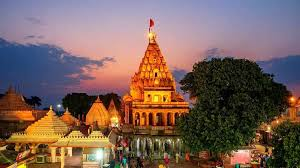
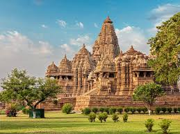
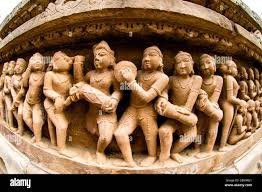

Mahakaleshwar Temple


Location: Ujjain city, Madhya Pradesh
Deity: Lord Shiva (as Mahakaleshwar – the "Lord of Time/Death")
Significance: One of the 12 Jyotirlingas in India, only Dakshinamukhi Jyotirlinga (facing south), associated with tantric worship
Ritual Highlight: Bhasma Aarti – unique ritual using sacred ash at dawn
Mythology: Shiva took the fierce Mahakal form to protect Ujjain
Architecture: Traditional Maratha-style temple with multi-tiered spires
Festivals: Maha Shivaratri, Shravan month, and Nag Panchami
Location Detail: Near the holy Shipra River, in the heart of Ujjain city
Khajuraho Temples


Location: Khajuraho, Chhatarpur district, Madhya Pradesh
Famous For: Stunning Nagara-style architecture and intricate erotic sculptures
Deities: Temples dedicated to Hindu (Shiva, Vishnu) and Jain deities
Built By: Chandela dynasty (10th–12th century)
Cultural Festival: Khajuraho Dance Festival – classical dance performances amid the temples
Main Road Route: Ujjain to Khajuraho
Distance: ~450–500 km (approx. 9–10 hours by car/bus)
Best Road Route: Ujjain → Bhopal → Sagar → Khajuraho
Road Condition: Generally good, with highways and scenic stretches
Travel Tip: Early morning drive is ideal; stay hydrated and watch for rural traffic